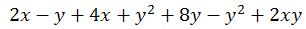
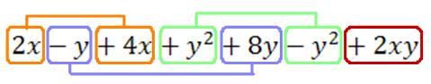
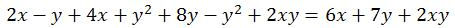
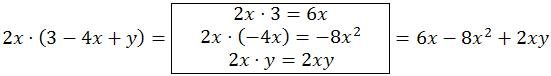
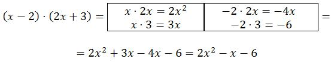
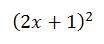
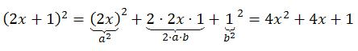
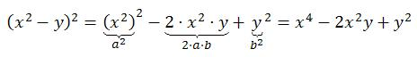
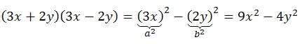

2.2. Operaciones con expresiones algebraicas
Ya sabes qué es una expresión algebraica y cómo hallar su valor numérico. Veamos ahora cómo trabajar con ellas y, para ello, aprenderás a sumar, restar y multiplicar expresiones.
Suma y resta
Fíjate en la siguiente expresión:

Está formada por siete sumandos llamados términos. En cada término, (por ejemplo, 2xy) podemos distinguir entre la parte numérica o coeficiente (en nuestro caso, 2) y la parte literal (xy).
Hay, a su vez, varios términos semejantes (tienen exactamente la misma parte literal). Ésos serán los que podemos sumar y restar. En nuestro ejemplo, encontramos cuatro tipos diferentes de términos semejantes.

La suma y la resta consisten básicamente en "contar" los términos semejantes:
- Término x: 2x + 4x = 6x
- Término y: -y + 8y = 7y (Recuerda que -y equivale a -1y)
- Término y2: y2 - y2=0
- Término xy: 2xy
Resumiendo,

Veamos una explicación en el siguiente vídeo:
Vídeo de Tutomate alojado en YoutubeProducto
Para realizar el producto de un término por toda una expresión, multiplicaremos el primero por cada uno de los términos de la segunda expresión. Esto se resuelve multiplicando los coeficientes entre sí, por un lado, y las variables entre sí, por otro. Por ejemplo,

El producto de dos expresiones es similar con el añadido de que hemos de multiplicar cada uno de los términos de la primera expresión por cada uno de los términos de la segunda. A continuación, sumaremos o restamos los términos semejantes para que el resultado quede lo más simplificado posible.

Importante
Recuerda que:
- Si un coeficiente multiplica a una variable, no escribimos el signo de multiplicar: 2·x = 2x
- Si un coeficiente o una variable multiplica a un paréntesis, tampoco es necesario escribir el signo de multiplicar: -3·(x + 1) = -3(x + 1)
- Al multiplicar variables de la misma base, sumamos los exponentes (igual que hacemos al multiplicar dos potencias de la misma base): (xy3)(x2y2) = x3y5
Productos notables es el nombre que reciben determinadas operaciones con expresiones algebraicas que cumplen ciertas reglas fijas, cuyo resultado se puede escribir mediante simple inspección, sin realizar la operación.
Importante
Hay tres fórmulas que debes conocer, que reciben el nombre de Identidades o Productos notables, y que facilitan las operaciones y te serán de ayuda más adelante.
- Cuadrado de la suma:

Por ejemplo, si queremos calcular
, tendremos que sustituir en la fórmula a = 2x y b = 1. Por tanto, obtendremos
- Cuadrado de la diferencia:

Ejemplo:
. Observa que, en la fórmula, el único término que tiene signo negativo es ab (no b2). - Suma por diferencia:

Ejemplo: